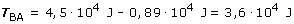

Cuando el campo gravitatorio es creado por una distribución de masas, el trabajo es la suma numérica de los trabajos realizados por los campos de cada masa (Principio de superposición), por tanto hay que calcular el trabajo que hacen los campos gravitatorios de M1 y M2 sobre la masa de 1000 kg cuando se desplaza desde B hasta A
 Resulta un trabajo positivo porque el campo resultante favorece el desplazamiento (Observa que en el punto de partida, B, se anulan los campos de M1 y M2 y a partir de ahí predomina el campo de M1) |